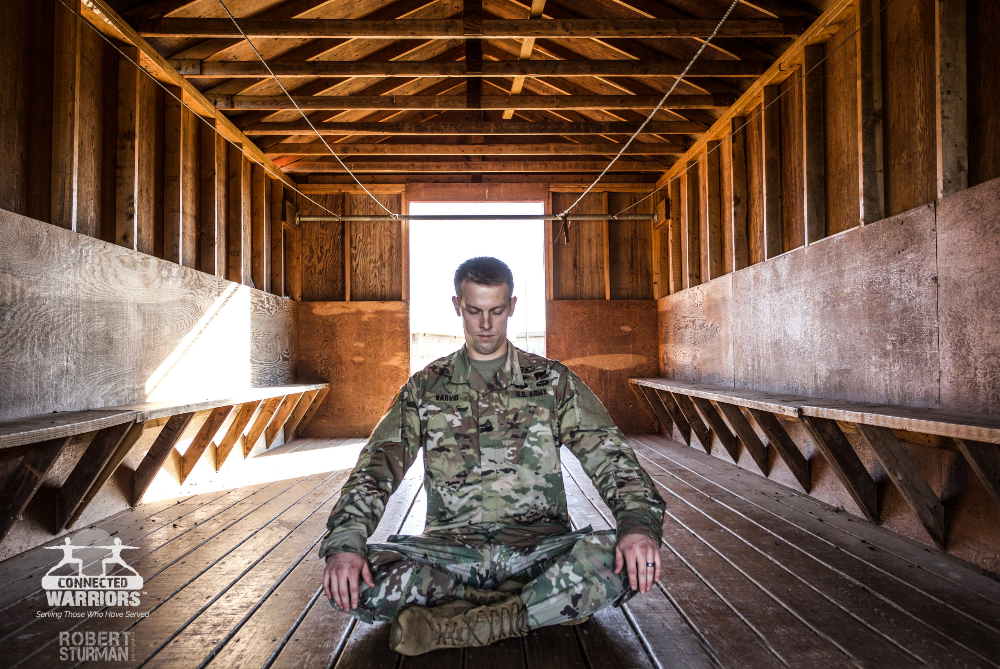
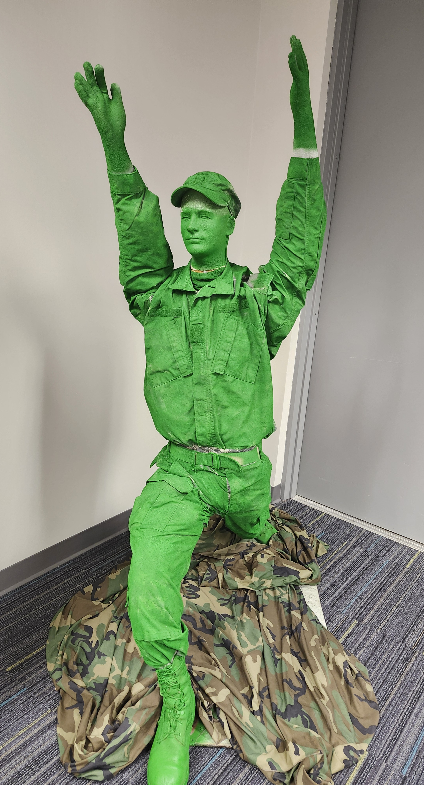
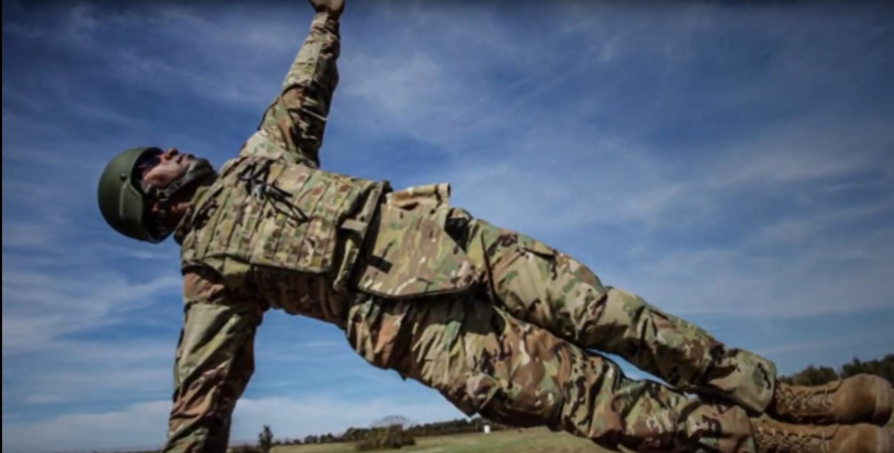
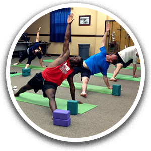

Trauma-conscious yoga classes
Free classes that emphasize choice, breath, grounding, and steady progress for veterans, service members, first responders, and families.
501(c)(3) nonprofit
Connected Warriors serves veterans, active-duty military, first responders, and their families with restorative programs designed to build resilience, calm the nervous system, and strengthen community.

In partnership with the U.S. Department of Veterans Affairs
Connected Warriors works in partnership with the VA to expand access to trauma-conscious yoga programming at VA Medical Centers, Vet Centers, and community-connected spaces.
Our programs
Every program is built to be welcoming, accessible, and grounded in trauma-conscious practices that meet people where they are.

Free classes that emphasize choice, breath, grounding, and steady progress for veterans, service members, first responders, and families.

Training pathways help instructors build the skills and cultural understanding needed to serve military-connected communities with care.

Programs are offered through trusted hosts, making it easier for participants to find local support and remain connected over time.
Find a class near you
The locations below are based on active entries in the repository workbook. Where the spreadsheet does not provide exact times, the weekly schedule shown is a clearly labeled sample placeholder until confirmed by the organization.
Donate
Support free classes, instructor preparation, and outreach to more veterans, active-duty military, first responders, and family members.
Helps provide props and class materials for a participant.
Supports a month of weekly programming for one participant community.
Strengthens launch support for a new class site or outreach effort.
Contact
Reach out to Connected Warriors for class details, partnership conversations, volunteering, or donation questions.
Veterans, active-duty military, first responders, and their families.
Class schedules and locations may change. Please confirm attendance details before traveling.